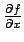
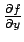

Next: About this document ...
Name: Calculus III
Exam 2
1 November 2000
``... I never went to Cambridge as my brothers did. I had the chance,
but I refused it. I wanted to get out into the world. I've always
regretted it. I think it would have saved me a lot of mistakes. You learn
more quickly under the guidance of experienced teachers. You waste a lot of
time going down blind alleys if you have no one to lead you.''
``You may be right. I don't mind if I make mistakes. It may be that in one
of the blind alleys I may find something to my purpose.''
from The Razor's Edge by W. Somerset Maugham
Instructions: Show all work to receive full or partial credit. You may use
a scientific
calculator/graphing calculator. All University rules and guidelines for
student conduct are applicable.
- 1.
- [20 pts] If
calculate

,

,
 and
and
 .
.
- 2.
- [20 pts] Prove that
is not continuous at (0,0).
- 3.
- [20 pts] Find the equation of plane tangent to the surface
x2 - y2 - z2 = 1
at the point
 .
Sketch the surface and the tangent plane.
(Be sure to clearly label the x, y and z axes.)
.
Sketch the surface and the tangent plane.
(Be sure to clearly label the x, y and z axes.)
- 4.
- [20 pts] Find the critical points of the function
f(x,y) = x2 + 5xy + 2y2.
- 5.
- [20 pts] Find the maximum and minimum of
f(x,y) = xy
subject to the constraint
x2 + y2 = 4.
Next: About this document ...
Louis F Rossi
2002-03-25